Considerado o mais fraco da humanidade. Ele sobrevive a uma masmorra
dupla e é escolhido por um programa misterioso como seu único jogador.
O programa lhe dá a habilidade de aumentar sua força, possivelmente
além de qualquer limite conhecido.
⚠️ Inicie o jogo realizando todas as tarefas do dia 1 no menu a esquerda [TAREFAS DIÁRIAS]. As tarefas diárias serão o seu Tutorial para o jogo ⚠️
Solo Leveling: Arise from the Shadow
Através de batalhas implacáveis, Jinwoo aprimorou suas habilidades e eventualmente completou uma " Missão de Troca de Classe ",
adquirindo o título de "Monarca das Sombras", que lhe permite comandar um exército de soldados das sombras. Agora,
movido pela esperança de curar sua mãe doente, Jinwoo parte em uma nova jornada para obter materiais para o "Elixir da Vida".
⚠️ Ao realizar todos os dias do Menu TAREFAS DIÁRIAS, continue lutando e derrotando os monstros até matar o Boss final [Antares - Rei dos Dragões - Monarca da Destruição]⚠️
STATUS
❤️ Vida: 100%
🔋Fadiga: 0%
🪄 Mana: 10%/20%
Ajuda
❤️ Vida: Ao lutar contra inimigos você irá perder vida. Quando sua vida chegar em 0% não será mais possível lutar até a mesma ser recarregada,
compre "Poção de Vida" na Loja de Itens.
🪫Fadiga: Ao realizar tarefas no jogo é gerado um cansaço, ao chegar
em 100% não é possível realizar nenhuma tarefa extra. Para
recarregar a Fadiga você pode realizar a Missão diária [Recuperação Total da Fadiga] ou comprar
uma Poção de Fadiga na "Loja de itens".
🪄 Mana: A mana é a energia mágica necessária para utilizar as Habilidades. Ela pode ser comprada na "Loja de itens",
no momento o máximo de Mana é 20% mas durante o Jogo você poderá aumentá-la com a habilidade "Aprimoramento do Segundo Despertar" na aba Habilidades.
Cristais de Mana
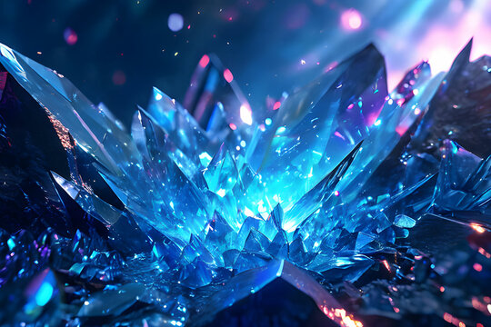
Dungeon de mineração: Cristais de Mana
EXPLORAR DANGEON
Os Cristais de Mana, apesar de seu nome, contêm menos mana e poder.
Eles podem ser encontrados e colhidos sem a necessidade de derrotar
monstros. Os cristais podem ser vendidos na aba Inventário para conseguir ouro.
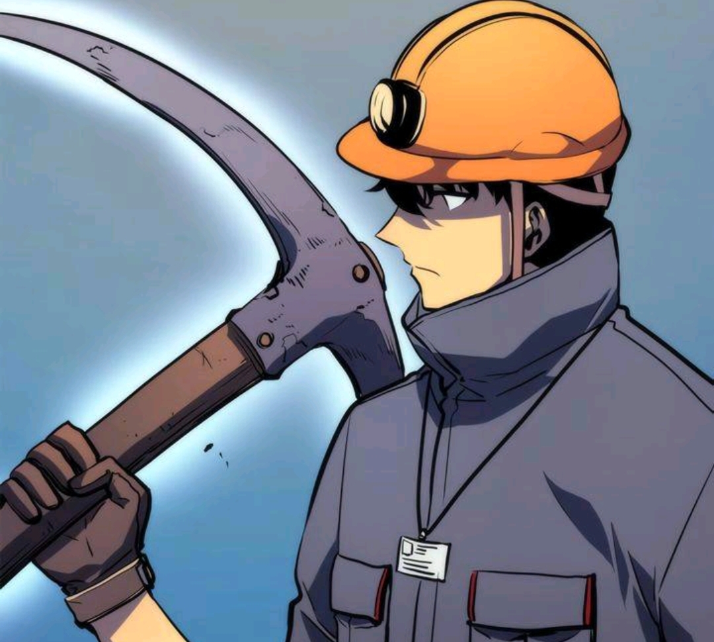
⛏️ Mina de Escavação ⛏️
Dica: Na aba "Atributos" adicione pontos no atributo Percepção para minerar mais Cristais
Ajuda
Melhore a sua "Percepção" para conseguir encontrar e minerar
Cristais de Mana de forma mais eficiente. A mineração é um
trabalho pesado e irá gerar "Fadiga".
Exemplos:
10 pontos de Percepção irá gerar 1 Cristal e 10% de Fadiga
11 pontos de Percepção irá gerar 2 Cristais e 9% de Fadiga
12 pontos de Percepção irá gerar 3 Cristais e 8% de Fadiga
...
...
18 pontos de Percepção irá gerar 9 Cristais e 2% de Fadiga
19 pontos de Percepção irá gerar 10 Cristais e 1% de Fadiga
Apartir de 19 pontos de atributos em Percepção, não irá mais ter alteração na geração de Cristais.
Exemplos:
20 pontos de Percepção irá gerar 10 Cristais e 1% de Fadiga
21 pontos de Percepção irá gerar 10 Cristais e 1% de Fadiga
22 pontos de Percepção irá gerar 10 Cristais e 1% de Fadiga
Missão Diária
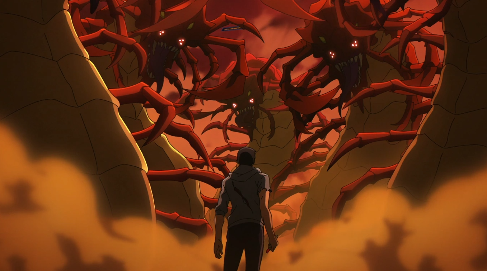
Missão de Penalidade ou Treino Diário
REALIZAR MISSÃO
Ao realizar a "Missão Diária" você pode optar por duas atividades.
Treino Diário: Ganho de Força
Realize 100% do seu treino ao clicar no botão "Realizar treinamento" e ganhe 1 Ponto de Atributo em Força como recompensa.
“Quanto mais fraco você é, mais rápido você é descartado, mas se você é forte, as pessoas procurarão essa força”
Ajuda
Melhore seu atributo "Força" para realizar um treino mais
eficiente. Lembrando que os treinos irão gerar 1% de "Fadiga".
Exemplos:
10 pontos de "Força" irá gerar 2% do Treino
11 pontos de "Força" irá gerar 3% do Treino
...
107 pontos de "Força" irá gerar 99% do Treino
108 pontos de "Força" irá gerar 100% do Treino
Missão de Penalidade: Sobrevivência
Centopeias gigantes
Rank: B ⭐⭐⭐⭐
Missão de Penalidade: Sobreviver a Centopeias gigantes do deserto com dentes envenenados,
caso você vença receberá 20 Pontos de experiência, caso não derrote a Centopeia você ainda receberar 2 pontos de experiência.
“Se a dor não me matar, ela apenas me tornará mais forte”
Derrote todos os inimigos!
Comece com as Dangeons da esquerda para a direita.
Ajuda
Os inimigos são avaliados através de um sistema de ranking, que vai de Rank E (o mais fraco) a Rank Monarca (o mais forte). O ranking reflete a força e o poder do Inimigo.
Rank:
E ⭐
D ⭐⭐
C ⭐⭐⭐
B ⭐⭐⭐⭐
A ⭐⭐⭐⭐⭐
S 💎
Monarca 👑
A Dangeon Templo de Cartenon é o palco da primeira missão e a ascensão de Jinwoo como um “Jogador”.
Dangeon Dupla: Templo de Cartenon
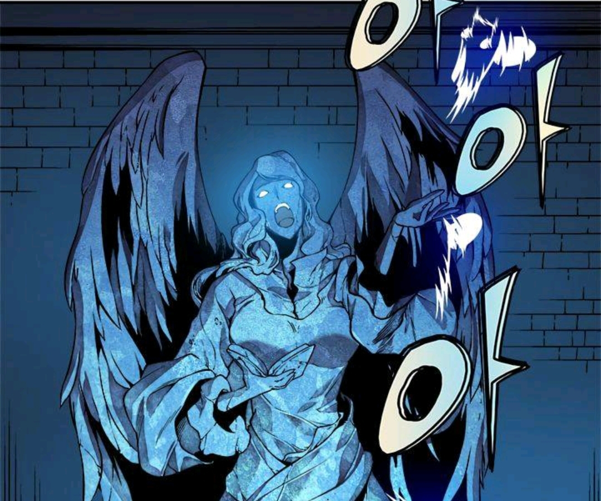
Primeiro Mandamento: Venere a Deus
Rank: Desconhecido
DESAFIAR
Missão secreta "Coragem dos fracos". A Dungeon Dupla, também
conhecida como Templo de Cartenon, é um local misterioso em
outra dimensão, cheio de monstros, que aparece dentro de dois
calabouços Rank D. No seu nível atual é impossível derrotar o Chefão, apenas sobreviva!
Segundo Mandamento: Louve a Deus
Rank: Desconhecido
DESAFIAR
Missão secreta "Coragem dos fracos". A Dungeon Dupla, também
conhecida como Templo de Cartenon, é um local misterioso em
outra dimensão, cheio de monstros, que aparece dentro de dois
calabouços Rank D. No seu nível atual é impossível derrotar o Chefão, apenas sobreviva!
Terceiro Mandamento: Prove sua fé em Deus
Rank: Desconhecido
DESAFIAR
Missão secreta "Coragem dos fracos". A Dungeon Dupla, também
conhecida como Templo de Cartenon, é um local misterioso em
outra dimensão, cheio de monstros, que aparece dentro de dois
calabouços Rank D. No seu nível atual é impossível derrotar o Chefão, apenas sobreviva!
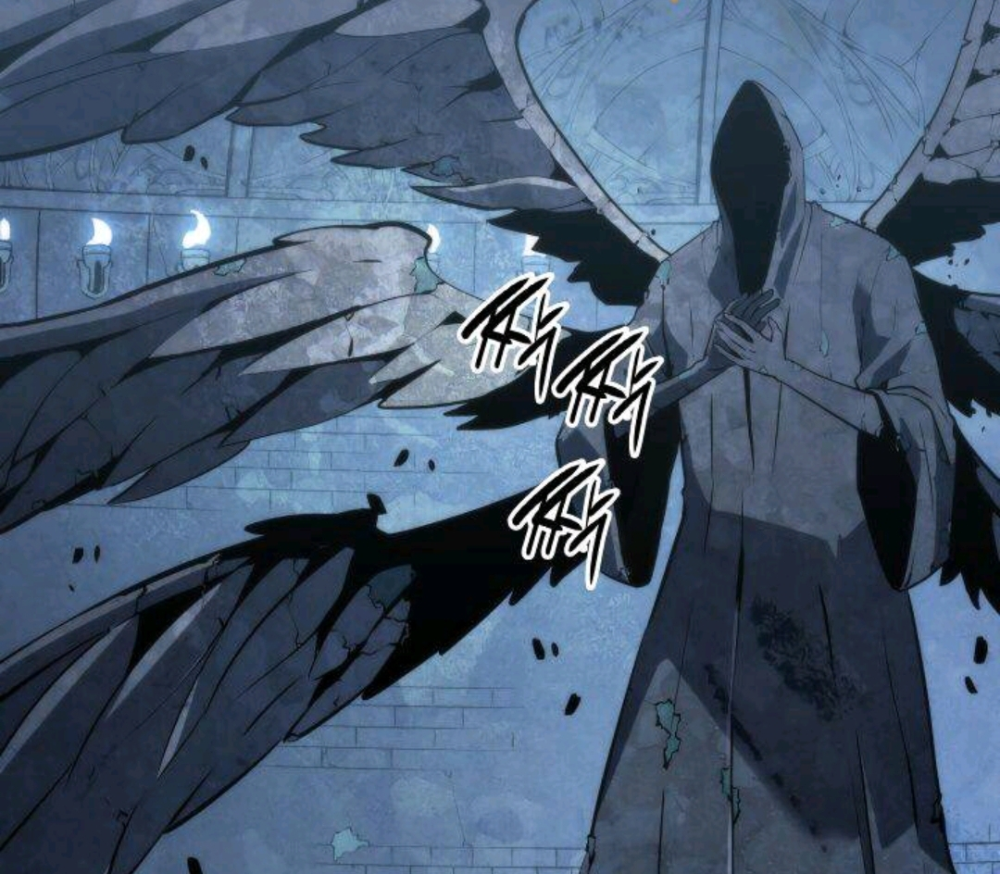
Você ainda não é forte o suficiente para desafiar o Boss nessa Dangeon! Siga para a Dangeon Eminente (Próxima dangeon).
Retorne ao Templo de Cartenon depois de lutar contra o Rei Formiga na Dangeon Ilha de Jeju.
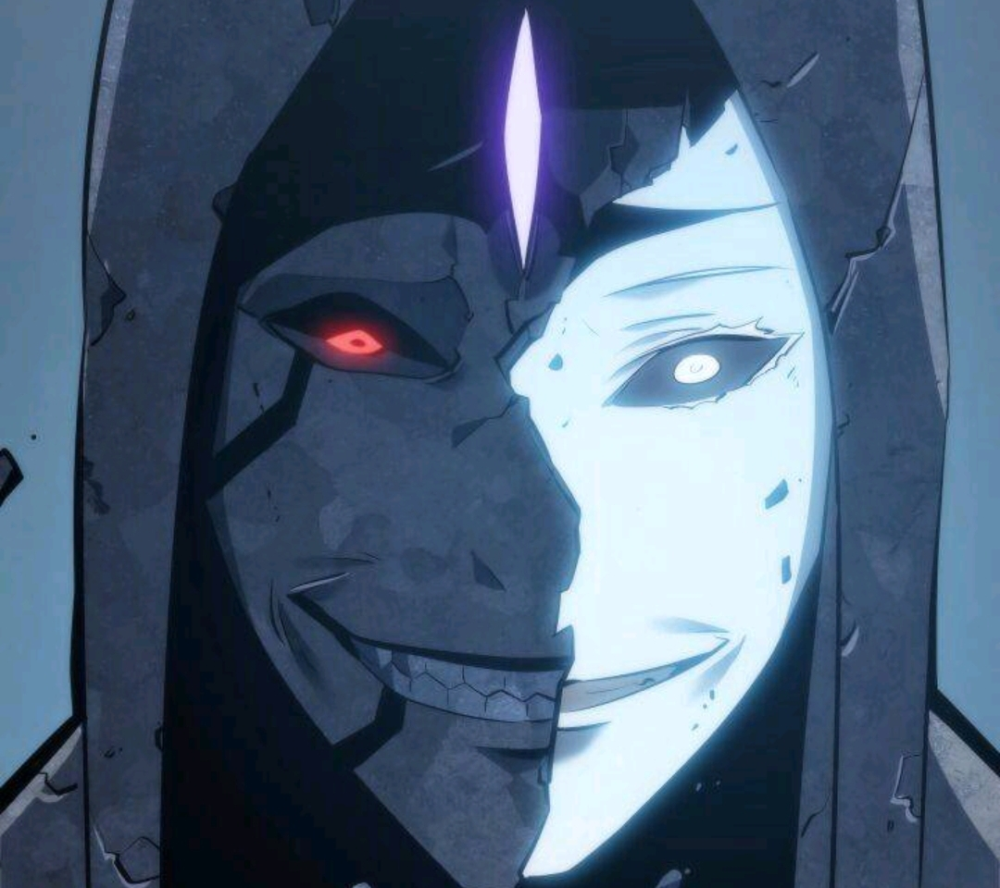
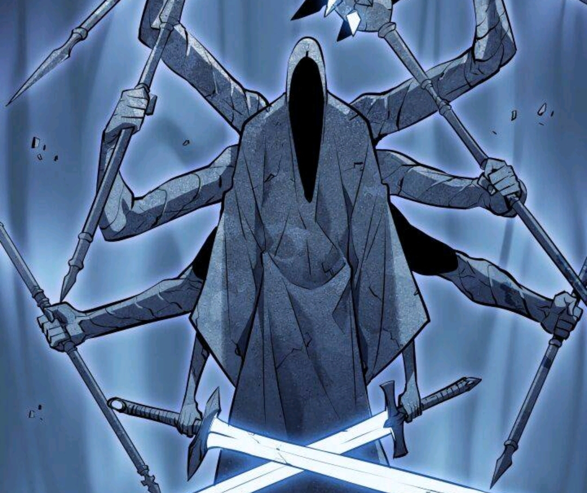
O Arquiteto
Rank: S 💎
DESAFIAR
O Arquiteto é um ser extremamente orgulhoso, egoísta e cruel, que possui total desdém pela humanidade.
Ele é o moderador do Sistema (Sistema que permite o Jogador a subir de nível) e é leal aos Monarcas, uma raça antiga de monstros que deseja destruir a raça humana.
“A beleza e o horror funcionam muito bem”
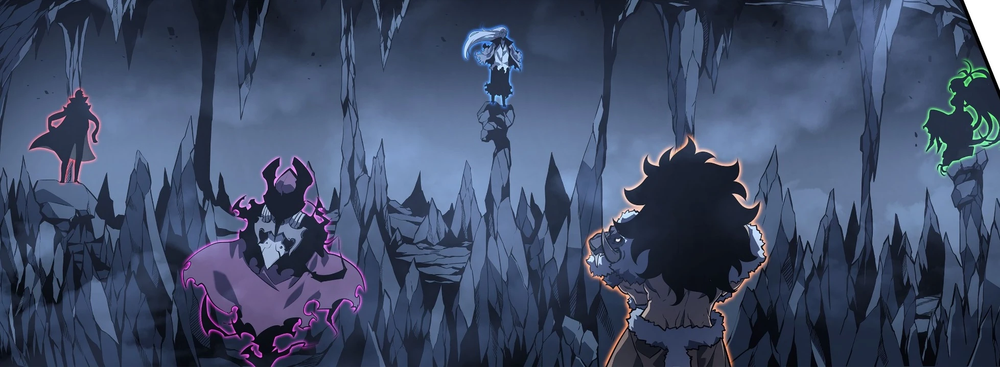
Ao derrotar o Boss "O Arquiteto" siga para a Dangeon Arco dos Monarcas.
Dangeon Eminente: Estação de Metrô de Hapjeong
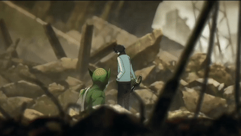
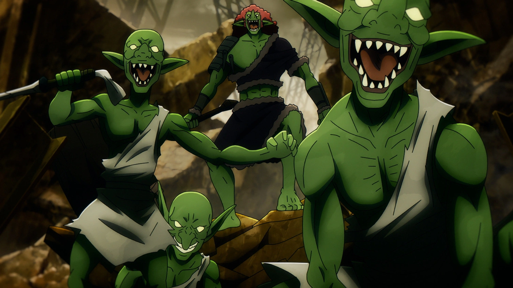
Goblins
Rank: E ⭐
DESAFIAR
Os goblins são um tipo de monstro muito comum encontrado em todos os
tipos de dungeons. Eles são um tipo humanóide de besta mágica e seu
poder tende a ser baixo.
“Eu sou o caçador mais fraco… mas não por muito tempo.”
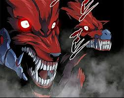
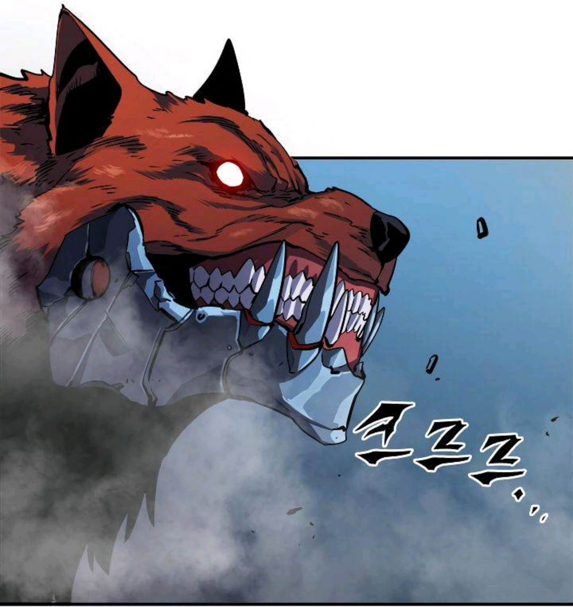
Lycan com Presas de Aço
Rank: D ⭐⭐
DESAFIAR
Um lobo peculiar com presas literalmente de aço. Eles mal são mais
fortes do que um caçador Rank E, mas podem ser uma ameaça se
atacarem em grupos, algo que farão se perceberem que um rival é mais
forte do que eles.
"Se eu não matar, serei morto. Não posso mais fugir."
Pedra Rúnica [FUGA]
EXPLORAR
Você ganhou uma Pedra Rúnica, ao utilizar a pedra você não irá lutar contra o Boss da Dangeon [Kasaka].
Deseja usar a pedra rúnica de fuga?
Kasaka Azul de Presas Venenosas
Rank: D ⭐⭐
A Governante do Pântado: Esta cobra gigantesca tem escamas semelhantes a
armaduras, enormes presas venenosas, velocidade e força suficientes
para superar um chefe de dungeon regular do Rank-D.
Golem de pedra
Rank: D ⭐⭐
Ao sair da Dangeon Eminente, Sung encontra um Golem que escabou da Dangeon (Dangeon Break) para o seu mundo.
O Golem de Pedra é o chefe de uma Masmorra Rank-D que surgiu perto da Estação de Metrô Hapjeong.
É uma fera enorme, do tamanho de um prédio pequeno, com um corpo feito inteiramente de rocha e veias azuis brilhantes por todo o corpo.
Não subestime o poder dos insetos!
Dangeon: Dungeon dos Insetos
Insectoids
Rank: E ⭐
DESAFIAR
Mostros que parecem uma mistura de gafanhotos e aranhas, eles são
relativamente fracos.
“Ele que luta contra Monstros, deve tomar cuidado para que ele mesmo não se torne um deles.”
Buryura
Rank: C ⭐⭐⭐
DESAFIAR
Esta aranha gigantesca é o chefe da dungeon dos insetos de Rank-C. Esta aranha é incrivelmente rápida e forte o suficiente para quebrar pedras com um único pisão. Ela também usa suas teias para sua vantagem e cuspe ácido.
“O sistema me usa, e eu uso o sistema”
Hwang Dong Suk e seu grupo
Rank: C ⭐⭐⭐
DESAFIAR
Grupo de Hwang Dong Suk: Como um Tanker de Rank C, Hwang é forte e
consegue lidar com monstros de Rank C sem problemas. Ele também é
considerado um espadachim capaz, e empunha tanto uma espada quanto
um escudo em combate. Ele mata pessoas para benefício próprio. Afinal,
"o que acontece nas masmorras fica nas masmorras".
“Se vocês são caçadores, estou dizendo que devem estar prontos para se tornar Caças”
Missão: Elixir da Vida
Obtenha os 3 ingredientes para o Elixir da Vida
VISUALIZAR
O Elixir da Vida é um artefato mágico capaz de curar qualquer doença, inclusive a doença que a mãe de Sung Jinwoo possui, chamada
"Sonho Eterno" (doença causada pela falta de imunidade a Mana). Para obter o Elixir, Jinwoo precisa progredir no Castelo Demoníaco.
No castelo do Rei Demônio você pode obter os 3 ingredientes para o Elixir da Vida, que cura qualquer doença por meio de uma magia poderosa.
Essa habilidade pode ser usada somente uma vez, ao utilizar você irá ganhar 100% de Vida,
0% de Fadiga e sua Mana irá até o máximo permitido pelo seu nível.
❌ Habilidade Indisponível: Elixir da Vida [Derrote Cerberus Guardião do Inferno]
❌ Fragmento da árvore do mundo - Um pedaço de madeira que deve ser obtido pela remoção das partes corrompidas do 'Bastão do Vulcano' que foi criado dos ramos da árvore do mundo [Derrote Vulcano Avarento]
❌ Água nascente da floresta ecoante - Usada para evoluir armaduras, aprimorando sua defesa e utilidade [Derrote Metus guía das almas]
❌ Sangue Purificado do Monarca Demoníaco - Fluidos criado pela purificação do sangue do monarca dos demônios. É uma forte energia mágica e radioativa, e apesar da purificação, ainda há um pouco de toxidade restante [Derrote Baran - Monarca das Chamas Branca]
Castelo Demoníaco
Cerberus Guardião do Inferno [Portões do Castelo Demoníaco]
Rank: A ⭐⭐⭐⭐⭐
DESAFIAR
O Cerberus de três cabeças é o Guardião do Castelo Demoníaco. O Cerberus assim como os Lobos são Bestas Mágicas, o Título Assassino de Lobos pode ser usado contra ele.
“Devore o Sistema!”
Você ainda não é forte o suficiente para continuar nessa Dangeon! Tente voltar em outro momento
[Retorne ao Castelo depois de lutar contra Kargalgan na Dangeon Guilda dos Caçadores]
Demônios [Andares inferiores]
Rank: B ⭐⭐⭐⭐
DESAFIAR
Dependendo de sua força, os demônios vêm em vários tamanhos e formas. Os nobres demônios são tão pequenos quanto os humanos e se parecem muito com eles, enquanto os demônios comuns podem ser tão grandes quanto pequenas construções e se parecer com animais. Embora nem sempre consistentes, especialmente com nobres, os demônios geralmente têm chifres e olhos vermelhos.
Sung Jin-Woo está ocupado lutando contra Demônios Superiores, será tarefa das Sombras derrotar os Demônios desse nível [Será somado somente os atributos das Sombras].
Vulcano Avarento [50º Andar]
Rank: A ⭐⭐⭐⭐⭐
DESAFIAR
Vulcano é o segundo chefe do Castelo Demoníaco e o
Governante dos Andares Inferiores. Ele também é conhecido como o Vulcano Avarento por sua imensa ganância e poder.
“Eu vou devorar a escuridão e me tornar mais forte.”
Metus guía das almas [75º Andar]
Rank: A ⭐⭐⭐⭐⭐
DESAFIAR
Metus, também conhecido como o Guia das Almas Partidas, é um poderoso monstro que residia no 75º andar do Castelo Demoníaco.
“Eu não tenho mais medo de morrer. Eu sou o único que pode me derrotar.”
Esil Radiru [80º Andar]
Rank: A+ ⭐⭐⭐⭐⭐
DESAFIAR
Uma amazona demônia que sempre lutou para promover o nome de sua família.
Você que Matar a Esil Radiru?
A sua escolha irá gerar um resultado diferente
Se você matar a Esil, não será possível seguir com uma amizade entre humano e demônio. Caso queira continuar siga com a luta normalmente.
Se você poupar a vida da Esil, não será possível seguir com a luta. Deseja fazer amizade com ela?
Criados diretamente pela entidade mais poderosa do universo, os monarcas são seres de poder inimaginável em comparação com humanos e monstros e só são rivalizados pelos Governantes.
Este é o primeiro dos 8 Monarcas que você irá enfrentar!
Baran Monarca das Chamas Branca [100º Andar]
Rank: Monarca 👑
DESAFIAR
Baran lutou ao lado dos outros Monarcas , incluindo o Monarca das Sombras Ashborn , em uma guerra devastadora com os Governantes
a mando de seu criador, o Ser Absoluto . Conforme a guerra progredia, Antares
, o Monarca mais forte, ficou com medo dos poderes de Ashborn e ordenou que Baran e Rakan o derrotassem. Ele voa em seu dragão de Rank S chamado Kaisellin.
Você está forte o suficiente para seguir na Dangeon "Ilha de Jeju"!
Dangeon dos Goblins
Mr. Kang
Rank: B ⭐⭐⭐⭐
DESAFIAR
Um caçador que trabalha como inspetor para a equipe de vigilância da
Associação Coreana de Caçadores e um assassino de aluguel. "Acidentes" inesperados sempre acontecem
quando ele é despachado, e os criminosos que ele monitora muitas vezes morrem nesses "acidentes".
“Se você olhar por muito tempo para um abismo, o abismo também olhará para você”
Missão subir de nível
Yoo Jin-Ho
Rank: D ⭐⭐
DESAFIAR
O segundo filho do presidente da Yoojin Construction Company, ele entrou no
mundo dos caçadores com equipamento top de linha, graças à grana do
pai. Jin-Ho fez amizade com Sung Jin-Woo graças a
uma reviravolta do destino e muitas incursões.
Ele é uma das poucas pessoas
em quem Sung Jin-Woo confia plenamente.
. Os monstros que mais aparecem nessa Dangeon são os GOBLINS.
“Eu não sou um herói, sou alguém que busca sobreviver.”
A posição de Mestre de Guilda é uma conquista de alto nível, alcançada por aqueles que se destacam em suas habilidades e liderança.
Para se tornar mestre de guilda, é necessário participar de 20 Dangeons. Ajude Yoo Jin-Ho nessa jornada!
ESSA MISSÃO NÃO É OBRIGATÓRIA, E VOCÊ PODE VOLTAR AQUI SEMPRE QUE NECESSITAR.
Prêmios:
❌ Item: Peitoral do grande cavaleiro
❌ Item: Manopla do grande guerreiro
❌ Item: Botas do grande Assassino
❌ Item: Luvas do grande Arqueiro
❌ Item: Anel do grande Mago
❌ Item: Saco de couro
❌ Habilidade: Perseverança
❌ Habilidade: Ataque Vital
❌ Habilidade: Artes Avançadas com Adagas
❌ Habilidade: Detectar
❌ Habilidade: Arremesso de Adaga
❌ Efeito: Orbe da Avareza - Desejo pela destruição
❌ Habilidade: Golpe Fatal
❌ Habilidade: Flame Spear
❌ Item: Veneno da Kasaka Azul de Presas Venenosas
❌ Habilidade: Força de vontade
❌ Posição: Mestre de Guilda
Este é o único momento em todo o jogo que você irá alterar a sua Classe, a importância da missão de troca de classe
reside em alterar o potencial e o desenvolvimento do personagem.
Ao mudar de classe, Sung Jin-woo, adquire a habilidade Necromante [Monarca das Sombras], expandindo exponencialmente seus atributos.
Dangeon: Missão de Troca de Classe
Igris o Vermelho-Sangue
Rank: B+ ⭐⭐⭐⭐
DESAFIAR
Chefe da Masmorra de Missão de Troca de Classe. Um cavaleiro que
protege um trono vazio, Igris era um membro anterior do Exército das
Sombras de Ashborn.
"Finalmente esse Jogo parece ter começado de verdade!"
6 Magos Necromantes
Rank: B ⭐⭐⭐⭐
DESAFIAR
Nessa Missão, você irá enfrentar 6 Magos Rank B com magia de necromancia. Serão invocados um exército de Infantaria, Arqueiros e Assassinos todos de Rank C para a luta.
“Sinto que algo dentro de mim se perde toda vez que fico mais forte”
Dangeon: Incidente do Portal Vermelho
Ursos de Gelo
Rank: B ⭐⭐⭐⭐
DESAFIAR
Os ursos de gelo viajam em matilhas e são liderados por um macho alfa, que se distingue por seu tamanho maior e pela crista roxa em forma de folha no peito.
Elfos do gelo
Rank: B ⭐⭐⭐⭐
DESAFIAR
Elfos do Gelo, também conhecidos como Hyakki ou Matadores de Gelo , são uma raça de elfos
tipicamente encontrados em ambientes congelados. Eles eram governados por Sillad , o Rei do Povo da Neve e o Monarca do Gelo.
Kim Chul
Rank: A ⭐⭐⭐⭐⭐
DESAFIAR
Durante um dos exercícios de treinamento de sua guilda, Chul foi nomeado líder do grupo de ataque e ficou incomodado
pelo fato de alguns forasteiros de Rank E participassem. Assim que ele e o resto do grupo de ataque passaram pelo portão designado,
sua entrada fechou-se repentinamente atrás deles e eles se encontraram presos em uma paisagem congelada e coberta de neve.
Baruka Elfo do gelo
Rank: B+ ⭐⭐⭐⭐
DESAFIAR
Baruka é o líder dos Elfos de Gelo e o chefe da Masmorra do Portão Vermelho. Ele é uma Besta Mágica de Rank-S,
conhecido por sua força impressionante e habilidades de combate excepcionais. Algumas de suas habilidades notáveis incluem
habilidades físicas, velocidade impressionante, força física, resistência mágica, habilidades de combate,
proficiência com Adagas, camuflagem e inteligência.
"Um calafrio que faz seu espírito tremer."
Missão: Ganhe experiência
Orcs Superiores
Rank: A ⭐⭐⭐⭐⭐
DESAFIAR
São o tipo mais forte de orcs e cada um é poderoso o suficiente para enfrentar um Caçador de Rank A. Como resultado, são vistos como altamente perigosos e geralmente só aparecem em Portões de Rank A de alto nível.
Sung Jin-Woo está ocupado lutando contra Kargalgan, será tarefa das Sombras derrotar os Orcs [Será somado somente os atributos das Sombras].
Dangeon: Guilda dos Caçadores
Kargalgan
Rank: A+ ⭐⭐⭐⭐⭐
DESAFIAR
Um xamã Orc superior e chefe do Portão da Guilda dos Caçadores.
Você está forte o suficiente para retornar a Dangeon "Castelo Demoníaco"!
Um portal de nível S surge na Ilha de Jeju, permitindo a invasão de monstros, principalmente formigas, lideradas pelo Rei Formiga.
A sua tarefa é derrotar o Rei Formiga e seus exércitos para fechar o portal e proteger a ilha.
Dangeon: Ilha de Jeju
Enxame de Formigas
Rank: S 💎
DESAFIAR
A Ilha Jeju é governada pela Rainha Formiga, a reprodutora de todas as formigas nascidas nos últimos 4 anos. As formigas começaram a passar fome e a devorar seus próprios bandos, enquanto os humanos estavam longe. Sendo assim, a Rainha Formiga estava desesperada para alimentar seus filhotes.
Rainha Formiga
Rank: S 💎
DESAFIAR
Rainha das formigas. Sung Jin-Woo está ocupado lutando contra o Rei Formiga, será tarefa das Sombras derrotar a Rainha Formiga [Será somado somente os atributos das Sombras].
“Eu vou sobreviver, porque se eu morrer, o que acontecerá com as sombras que já invoquei?”
Rei Formiga
Rank: S+ 💎
DESAFIAR
Rei das formigas, líder das formigas da Ilha de Jeju. Ele é tão poderoso que dá conta facilmente de caçadores de nível S.
“Você tinha muito a dizer para alguém que está prestes a morrer”
Você está forte o suficiente para retornar a Dangeon Dupla "Templo de Cartenon"!
Não é nostálgico enfrentar o Boss da sua primeira Dangeon?
Em outro mundo...
A Luz e a Escuridão existiam em uma era antes de tudo surgir. O 'Ser absoluto' dividiu a luz e criou os Governantes, e dividiu a escuridão para criar os 8 Monarcas.
Os Monarcas que nasceram para destruir o mundo. E os Gonvernantes que nasceram para defender o mundo, mataram os soltados um dos outros incessantemente.
Exausto pela guerra constante e sem fim, o 'Fragmento da luz mais brilhante' pediu ao Rei Absoluto...
Oh, nosso 'Governate Absoluto', por que não ajuda seus mais fiéis servos que lutam por sua honra?
Mas o ser absoluto não respondeu ao 'Framento da luz mais brilhante'.
E naquele momento o 'Framento da luz mais brilhante' percebeu...
Para o Ser Absoluto, a guerra entre Governantes e Monarcas não era nada além de entretenimento, e esse soberando não desejava que a guerra acabasse.
Arco dos Monarcas: A luta entre Governantes e Monarcas
Legia - Rei dos Gigantes - Monarca do Princípio
Rank: Monarca 👑
DESAFIAR
Astuto e surpreendentemente enganador para uma entidade como ele, Legia foi o primeiro e único monarca a ser capturado pelos Governantes. Capturado e aprisionado após a morte do Ser Absoluto, Legia foi usado como reforço de mana para o reino humano depois de ser detido na Terra.
"Eu não sou um Desastre... você que é."
Os cidadão de Chaos (outro mundo) que saem dos Portais são todos fugitivos. Eles foram capturados depois de serem derrotados pelos Governantes.
Já que ficaram presos por bastante tempo, sua consciência foi se esvaindo.
Querehsha - Rainha dos insetos - Monarca das Pragas
Rank: Monarca 👑
DESAFIAR
Querehsha, a Rainha dos Insetos e outro dos nove monarcas, é uma pessoa sadista com uma luxúria por derramamento de sangue. Ao contrário de Yogumunt, ela simplesmente gostava de matar humanos e tratá-los como presas. Em relação aos seus lacaios, ela demonstra uma atitude maternal surpreendente.
Os Gonvernantes estão injetando mana nesse mundo, se os Monstros que saem dos Portais são considerados desatres, a mana que vem com eles é uma benção.
Não apena Caçadores, todos pensam assim. Pedras de mana e itens mágicos. Atualmente, intens que podem conter mana são os mais valiosos.
Os Governantes decidiram usar os prisioneiros para isso, a mana fortalece o mundo onde antes não havia magia. O plano deles é criar um mundo que não seja
destruído pelo impacto da Guerra.
Então essa guerra é ...
Uma revanche entre os Gonvernantes e os Monarcas.
Rakan - Rei das Feras - Monarca das Presas
Rank: Monarca 👑
DESAFIAR
É agressivamente arrogante e cruelmente insensível, demonstrando um desdém e uma sede de sangue intensos em relação aos humanos, especificamente aqueles que
ele considera presas para ele. Apesar de sua postura elevada e arrogante, Rakan é bastante egoísta e covarde quando confrontado com oponentes possuindo poder muito superior.
"Meus dentes e garras irão rasgar sua pele e carne fraca."
O 'Fragmento de Luz mais brilhante' notou que não iria colocar um fim na guerra se continuasse lutando ao lado do 'Ser Absoluto', então junto com outros Fragmentos eles matam o 'Ser Absoluto'. A luta durou por muitos anos até o Fragmento de Luz mais brilhante morrer! Porém ao atravessar do Reino dos vivos para o Reino dos mortos ele descobriu que o ser Absoluto tinha escondido dele uma magia poderosa, a Habilidade Necromante [Extrai mana de um corpo cuja a vida chegou ao fim e a transforma em um soldado das Sombras].
Assim surgiu o 9° Monarca, o 'Fragmento da Luz mais brilhante' passou a se chamar Ashborn Monarca das Sombras, Rei dos vivos e dos mortos.
A guerra ainda durou por muito tempo e a cada 10 anos a Taça da Ressurreição era usada, começando tudo de novo, uma guerra sem fim até que...
Sillad - Rei do povo do gelo - Monarca do Gelo
Rank: Monarca 👑
DESAFIAR
Um Monarca orgulhoso que prefere resolver as coisas por conta própria. Seu maior objetivo é acabar com todos os receptáculos dos Governantes existentes entre os humanos.
Devido ao seu grande poder, os Monarcas e Governantes não podem vim para o nosso mundo pelos Portais, por isso eles precisam de um humano para ser o seu receptáculo. Como Ashborn é o monarca com mais poder também se torna impossível conseguir um receptáculo para ele.
Ashborn solicita ajuda ao Arquiteto para encontrar um receptáculo que seja forte o bastante para conter o seu poder. O Arquiteto então cria o 'Sistema' um jogo que permite o usuário conseguir as habilidades do Monarca e sua força por níveis e não todo de uma única vez.
O humano escolhido foi você!
Yogumunt - Rei dos Espectros Demoníacos - Monarca da Transfiguração
Rank: Monarca 👑
DESAFIAR
Ele é um Monarca poderoso que não se deixa levar por impulsos, preferindo agir com estratégia e cautela.
Tarnak - Rei dos Monstros humanoides - Monarca do Corpo de Aço
Rank: Monarca 👑
DESAFIAR
Tarnak, assim como Yogumunt, tinha nojo e ódio pelos humanos, um traço demonstrado pelo seu genuíno desprezo pelo fato de Jin-Woo ser o segundo
Monarca das Sombras. Apesar de ser extremamente poderoso como monarca, Tarnak teve o bom senso de perceber que não era páreo para Jin-Woo sem
Antares. Sung Jin-Woo está ocupado lutando contra Antares, será tarefa das Sombras derrotar Tarnak [Será somado somente os atributos das Sombras].
Quando os pilares de fogo que sustentam o céu estiverem erguidos, a morte inevitável irá bater a sua porta...
Antares - Rei dos Dragões - Monarca da Destruição
Rank: Monarca 👑
DESAFIAR
Criado com a vontade de destruir toda a vida, Antares é um ser que se deleita no caos e na maldade. Com um ponto de vista desdenhoso e condescendente em relação aos humanos, Antares é, na verdade, uma entidade honrosa, mas esse traço é reservado apenas para oponentes que podem ganhar seu reconhecimento e impressioná-lo em batalha.
Obrigado por jogar 5 horas de Solo Leveling!
Se você chegou até aqui, me pague um café [Pedra Rúnica da Fortuna PIX]